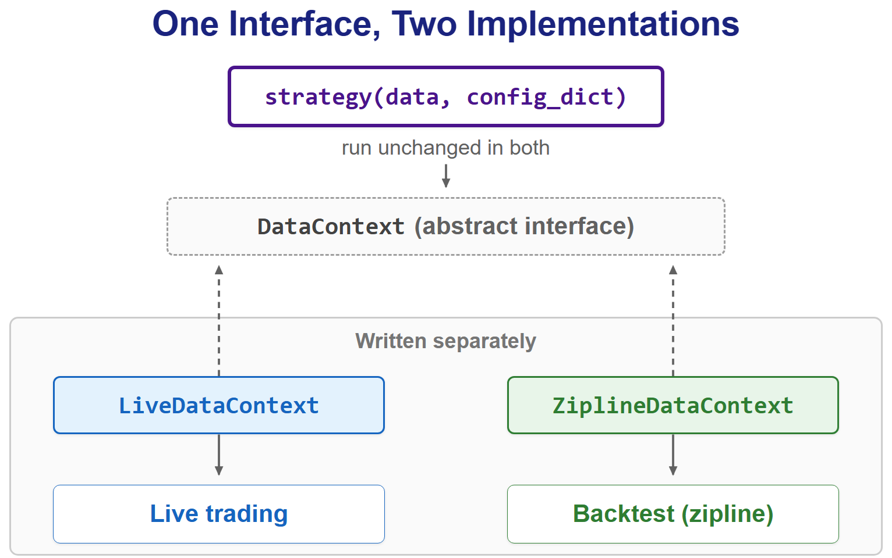
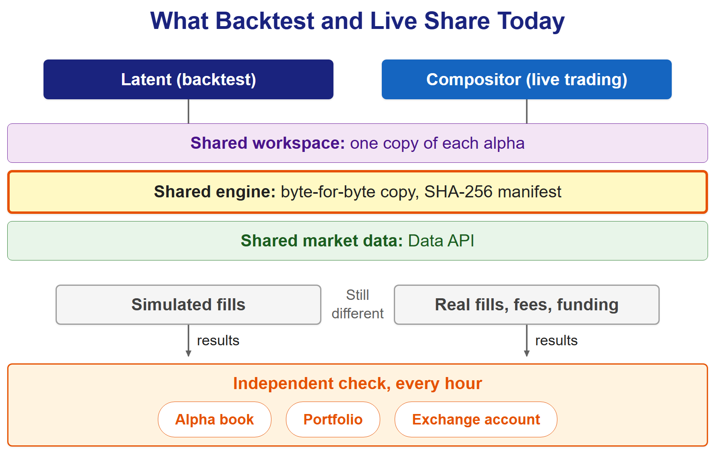

Two programs sharing one spec lost NASA a Mars orbiter. Our backtest and live engines once shared a spec too. Now live trading runs a hash-pinned copy of the backtest engine's files.
On September 23, 1999, NASA lost the Mars Climate Orbiter at Mars. Two pieces of ground software shared a written interface that said thruster data would be metric. One side wrote pound-force seconds and the other read newton-seconds, so the effect of every thruster firing was understated by a factor of 4.45.
Our backtest and live engines once shared that kind of agreement: one interface, two implementations written separately. Today live trading runs a byte-for-byte copy of the backtest engine, pinned by a hash manifest, and a separate job checks the two against each other every hour. Getting there meant breaking the agreement first.

One Interface, Two Implementations
Before Latent, our current backtest engine, we backtested on a crypto-adapted fork of zipline, the open-source backtester Quantopian built for stocks. In that era, live trading and backtesting really did run the same strategy code.
Every uploaded strategy was a single function, strategy(data, config_dict), and that exact function ran unmodified whether it was being backtested or trading real money. A validator in the upload pipeline rejected the older strategy(context, config_dict) signature, so there was no ambiguity about the shape a strategy had to take.
Underneath the function, though, the two sides were written separately. Market data reached the strategy through an abstract class, DataContext, with two implementations: LiveDataContext for live trading and ZiplineDataContext for backtests. The function was shared. The plumbing below it was written twice, by people keeping two pieces of code faithful to one description. That is the Mars Climate Orbiter's arrangement: a shared spec, and two sides trusted to honor it.
What made that era worth remembering was a comparison tool built on top of it. It pulled a live account's fills, ran a fresh backtest over the same period, and produced an HTML report showing where the backtest's picture of the market and the account's real history parted ways.
The Day the Shapes Split
For a few days in July 2026, Latent, the engine we built to replace zipline, accepted exactly the live system's upload format. Then we threw that out on purpose.
The commit that did it says why. Making the live format the contract meant users couldn't see the shape their alpha would run in, and the server had to work out the engine wiring on their behalf, so what was uploaded and what actually ran drifted apart. Instead, users would upload the engine's own four layers and a config, and the server would only supply the data paths and the dates.
# The live format, shared with zipline: a single function
def strategy(data, config_dict):
...
return target_weights
# Latent's format: a folder, uploaded exactly as it exists locally
alpha/MyStrategy/
core/ # optional
utilities/
factor/
signal/
MyStrategy.yamlFor a while, that made things worse. A strategy validated in Latent couldn't be uploaded to live trading without being rewritten, and the comparison tool belonged to the zipline engine we had just retired. The old spec was gone and nothing had replaced it.
Production Moved, Not the Backtest
The obvious repair was to teach the backtest to accept the live format again. We went the other way. Compositor, the core that now runs our live accounts, takes Latent's package: the same four layers in the same order, the same reserved names, and a config format both accept. Both read alphas from one shared workspace, so a strategy exists in exactly one place, and both engines read that same copy.
Then we stopped sharing a description of the engine and started sharing the engine. Compositor's live runner doesn't have its own signal code. It imports Latent's Strategy class and runs it in trading mode to compute real target weights for real accounts. The live side keeps a copy of the engine's thirteen files, and a manifest of their SHA-256 hashes records exactly which Latent commit they came from. The test suite checks every file against that manifest. Change one byte, add a file or drop one, and it fails. A second check compares the copy with the original itself, but only where the original is checked out next to it, which means a developer's machine and not the pipeline.
Refreshing the copy is a deliberate act: copy the files over, regenerate the manifest, and note the source commit. In late August 2026, the original engine moved seventeen commits ahead of the copy. The check against the original went red, and it stayed red until someone brought the copy up to date and recorded where it came from. That's the opposite of the orbiter's failure: a difference can't hide, and closing it has to be argued for in a commit.
One setting shows what that buys. When an alpha asks for more exposure than it declared, the shared engine can ignore it, stop the cycle, or scale the alpha back in proportion. Live trading scales it back, and an alpha that exceeds its own limit at registration is refused outright. Latent's backtests now default to the same scaling, so a backtest of an alpha behaves the way that alpha behaves live. A change to how the scaling works lands in both, because that code exists once.
Market data was never the problem. Both engines read from the same Data API, with no trimmed backtest dataset and no list of what the backtest is allowed to see.
Checking the Outcome, Not Just the Code
Sharing the bytes closes one gap. It doesn't close implementation shortfall, the difference between a paper portfolio and the real one that André Perold described in a 1988 paper. A backtest still simulates its fills, and a live account gets real ones, with real fees, real funding payments and real timing. The same code fed the same signal can still end up somewhere different, and the only way to know is to compare outcomes.
So a separate engine does that, every hour. For each alpha trading live, it submits a backtest of the same alpha to Latent and lines its value curve up with the live one where the two overlap, at three levels: the alpha's own book, the portfolio it belongs to, and the real exchange account. The curves are compared bar by bar at the alpha's own bar size, 15 minutes at the median. For each pair of curves it reports the gap at the end and the tracking error, the standard deviation of the difference between their returns. It is deliberately independent. It imports nothing from the live engine's internals and reads only the results tables and Latent's API, because otherwise the code that computed the live trades would also be grading itself.
What does it say today? Over the last seven days the check wrote just under 6,000 rows, covering 22 alphas, 14 portfolios and 6 accounts. In its most recent hourly run 24 of the 26 alpha books had a comparison, over a window of about 6.6 days and 635 bars at the median. Tracking error was 16.8 basis points of return per bar at the median alpha book, 34.8 at the 90th percentile and 39.3 at the worst. The gap at the end of the window is the larger number: 1.1 percent at the median, 9.0 percent at the 90th percentile and 15.1 percent at the worst. That is the gap the shared bytes don't close: whatever real fills, fees, funding and timing add on top of the same signals, plus anything we haven't found yet. At the portfolio level four portfolios had a comparison and their median gap was 2.4 percent. Only one account is comparable, so its figure, a 1.4 percent gap and 13.4 basis points of tracking error, is a single case and not a distribution. The exchange account isn't where the difference piles up, but four portfolios and one account are too few to call that a pattern.
The same week held 907 skipped comparisons, and 900 of them had one cause: Latent was backtesting a spot alpha as if it were a futures alpha, so the check withheld the comparison instead of reporting a gap nobody should read.
Those numbers took work to trust, because the check's first findings were about itself. In late September we found it grading each fund against the wrong baseline. The live engine builds a fund's mix from the capital actually allocated to each portfolio, while the checker had been using the raw allocation numbers stored at registration, which never move. It printed errors where nothing had diverged, and it could just as easily have stayed quiet where something had. A deposit produced the next false alarm about a week later. The account curve is the account's value relative to its first sample, so the jump at the moment of a deposit was reported as an execution gap. The checker now reads the exchange's deposit and withdrawal records, places each one on the minute its amount landed, and takes it out of the curve. If those records can't be read, it skips the comparison and writes the reason in the row instead of guessing, because a missing answer and an empty answer are different things.
The first fix also paid for the independence. The checker may not import the live engine's allocation code, so it derives the same weights from the tables the engine leaves behind, and a regression test runs both implementations on the same input and requires the same answer.

What Is Still Not Shared
The shared copy is the signal engine: the code that turns data into target weights. The backtest's fill simulator isn't part of it, and it can't be, because the live side doesn't simulate anything. That difference is exactly what the hourly comparison watches.
The comparison works on value curves, bar by bar at each alpha's own bar size. It doesn't line up individual fills the way the zipline-era tool did, and that finer view isn't rebuilt yet.
And the pin can lag. The pipeline checks the copy against its manifest, and every image build waits for that check, but the pipeline has no copy of the original to compare with. If Latent moves ahead, nothing in the pipeline says so, and the live engine keeps running the commit it was pinned to until someone refreshes the copy on purpose.
Shared Code, Checked Outcomes
The Mars Climate Orbiter didn't fail for lack of a spec. It had one, and both sides believed they followed it. Our zipline-era setup had the same strength and the same weakness. What we run now leaves less to take on trust: one copy of each strategy, one copy of the engine with a hash for every file, and an independent check of the results every hour.
Sharing the bytes removes one way for two engines to disagree. Comparing outcomes catches the rest, including the comparison's own mistakes.
The next post is about a cleanup process that read an empty list as the truth.
Sources
- Mars Climate Orbiter Mishap Investigation Board (1999). "Phase I Report." NASA. Link
- "Mars Climate Orbiter." Wikipedia. Link
- Perold, A.F. (1988). "The Implementation Shortfall: Paper Versus Reality." Journal of Portfolio Management 14(3), 4–9. Link
- Quantitative Brokers. "A Brief History Of Implementation Shortfall." Link
- National Institute of Standards and Technology (2015). "Secure Hash Standard (SHS)." FIPS PUB 180-4. Link
- "Tracking error." Wikipedia. Link